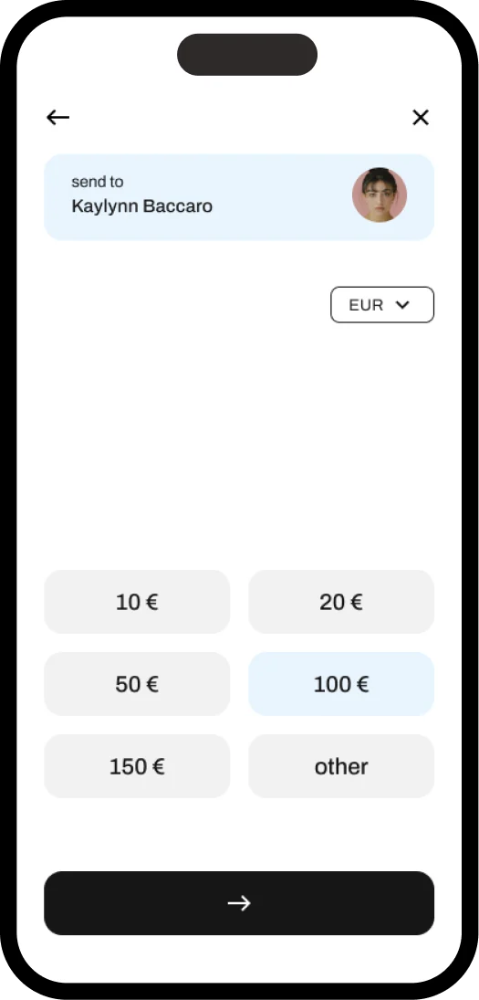
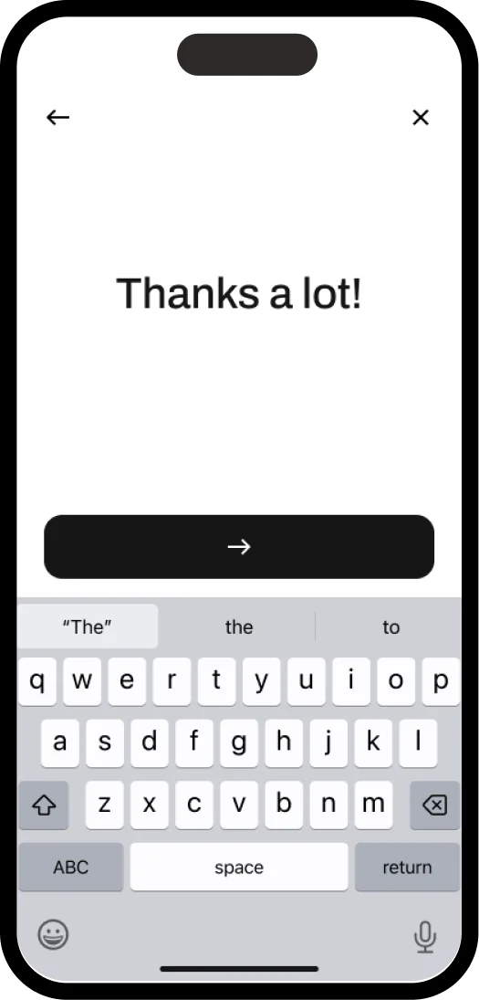

Arbeiten 02–07
Weitere Arbeiten
Weitere Arbeiten aus Logistik und Krisenkommunikation zeige ich auf Anfrage. Mit Ihrem Einladungslink geht es direkt weiter.
Arbeiten 02–07
Weitere Arbeiten aus Logistik und Krisenkommunikation zeige ich auf Anfrage. Mit Ihrem Einladungslink geht es direkt weiter.
aiba – KI-Assistent fürs mobile Banking
Ich habe aiba 2024 entworfen, als Chat in Banking-Apps noch Zukunft war. Heute steht genau diese Funktion auf den Roadmaps der Banken. Die Idee bringt zusammen, was ich in neun Jahren für DKB, Atruvia und weitere Banken gebaut habe: Sprachsteuerung, Chat-Assistenten und sichere Zahlungen.
9
Jahre Design für Banken
8
Banken, von der Direktbank bis zur Privatbank
2
Schritte bis zur Überweisung
Von Kontodaten zu Antworten.
Banking-Apps zeigen Umsätze, aber die Auswertung bleibt bei den Kunden: filtern, scrollen, selbst rechnen.
Eine App, die Fragen zu den eigenen Finanzen beantwortet und direkt handelt.
Ausgangspunkt war KIU, der KI-Chat-Assistent der Atruvia, an dessen ersten Studien ich gearbeitet habe. Als ChatGPT zeigte, was möglich ist, habe ich die Idee in einer eigenen Studie weitergeführt – die restliche App ist um diesen Assistenten herumgebaut. Dazu kommen Erfahrungen aus der Siri-Integration der DKB und dem Intent-Training für Alexa und Siri.
Schritt 1
Eine Frage genügt, gesprochen oder getippt. aiba nennt die Summe, zeigt die Einzelposten und legt die Auswertung als PDF ab.
Schritt 2
Empfänger, Betrag, fertig. Bestätigt wird per Wischgeste, damit nichts aus Versehen rausgeht.




Schritt 3
Konto, Sparen und Depot in einem Saldo, die Karten in einer Wallet.
Was 2024 ein Entwurf war, ist heute Standard-Roadmap vieler Banken. aiba zeigt, wie Sprache, Chat und Zahlung in einer Oberfläche zusammenfinden – ohne dass Sicherheit zur Hürde wird.